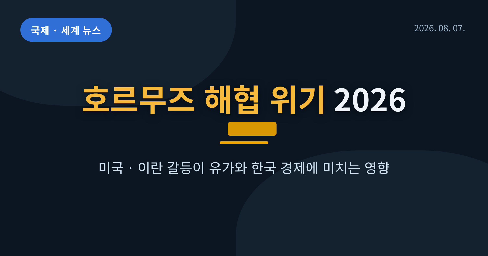
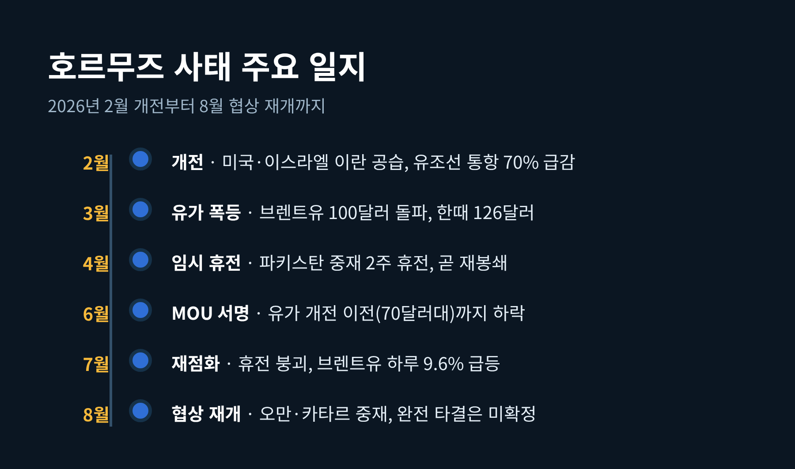
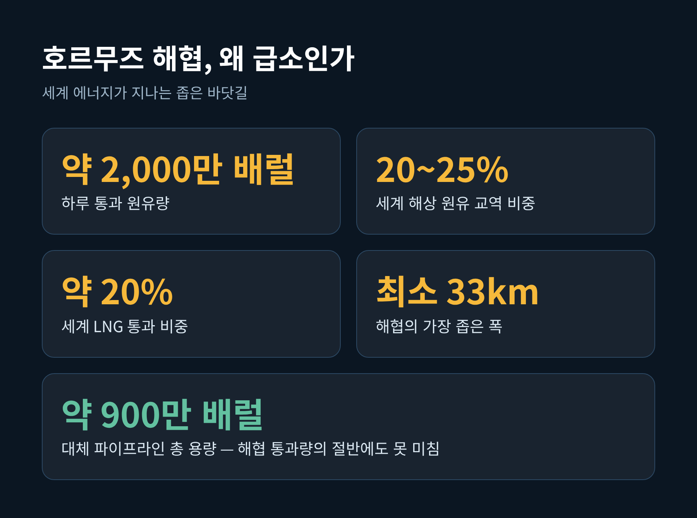
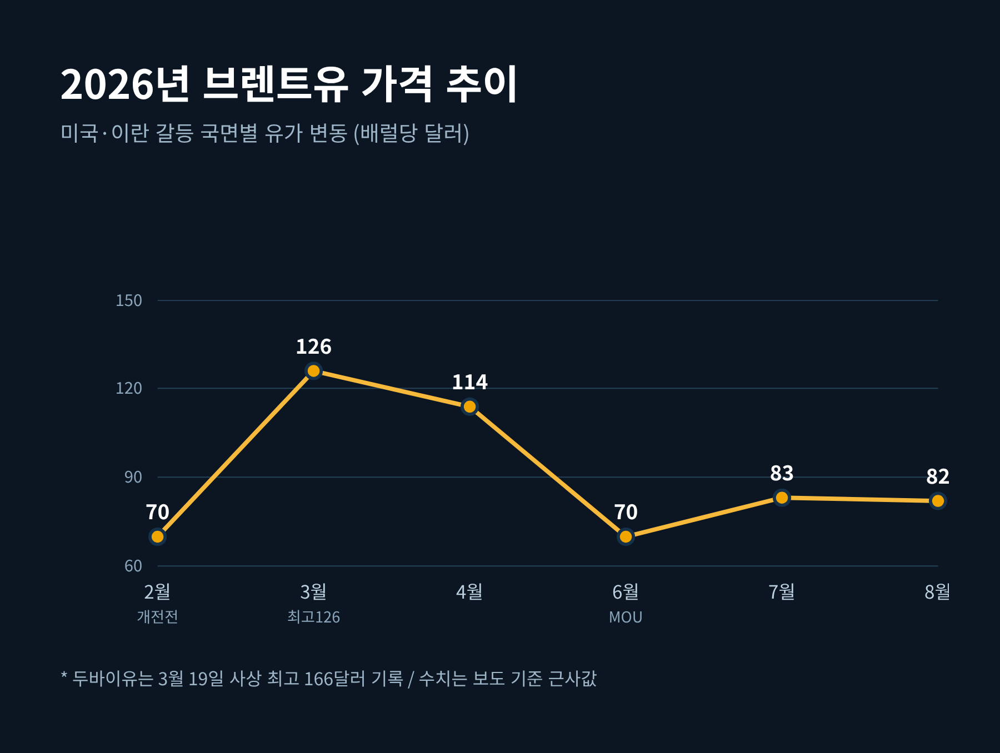
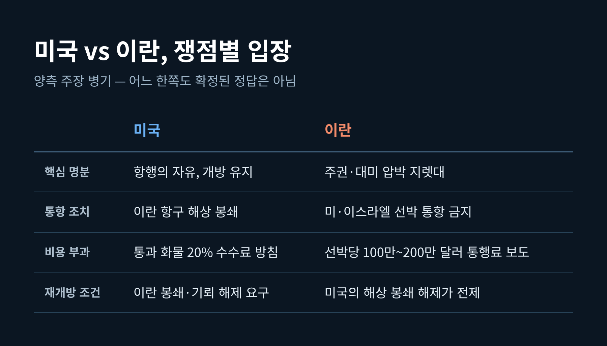
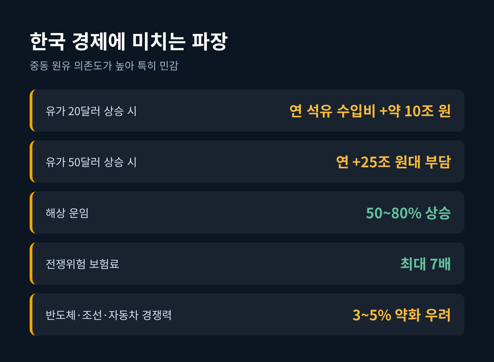
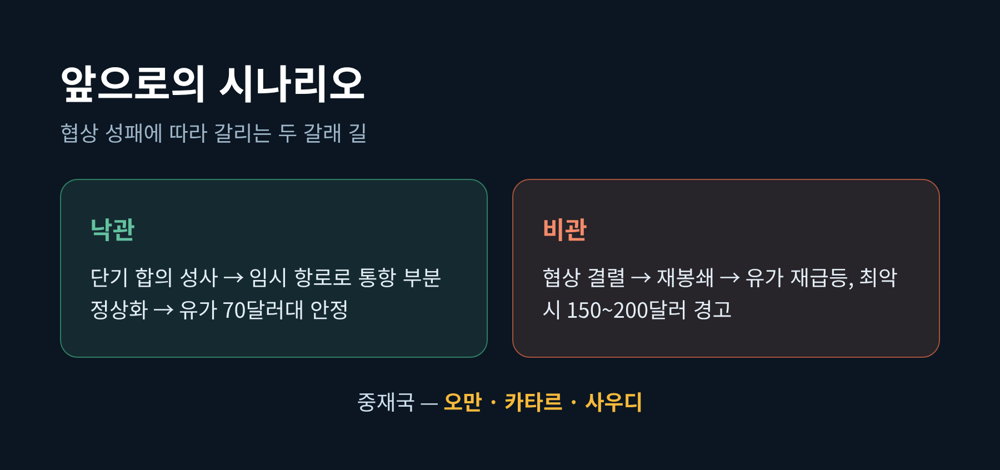

호르무즈 해협 위기, 미국·이란 갈등이 유가와 한국 경제에 미치는 영향 (2026년 8월 현재)
이번 글에서는 호르무즈 해협을 둘러싼 미국과 이란의 갈등을 8월 현재 기준으로 정리해 보겠습니다. 무슨 일이 벌어지고 있는지, 왜 세계 경제가 이 좁은 바닷길에 촉각을 세우는지, 그리고 우리 삶과 한국 경제에는 어떤 파장이 오는지 차근차근 짚겠습니다. 민감한 국제 사안인 만큼, 미국과 이란 양측의 주장을 함께 놓고 균형 있게 보겠습니다.

8월 현재, 호르무즈 해협은 어떤 상태인가
먼저 지금 상황부터 말씀드립니다.
2026년 8월 초 현재, 호르무즈 해협은 완전히 정상화되지 않은 채 협상 국면에 있습니다.
이란은 중재국 오만과 '임시 통항 항로'에 합의했다고 밝혔습니다.
다만 이란 외무장관은 "완전한 재개방은 아니다"라고 선을 그었습니다. "해협은 전쟁 이전 상태로 결코 돌아가지 않을 것"이라는 말도 덧붙였습니다.
미국 쪽 분위기는 조금 다릅니다.
8월 4일 국무장관 마코 루비오는 "진전은 있으나 최종 타결은 아니다"라고 했고, 재무장관 스콧 베센트는 "오늘내일 중 합의가 가능하다"며 낙관론을 폈습니다. 카타르는 단기 합의 제안서 초안을 이미 작성했다고 발표했습니다.
정리하면 이렇습니다.
미국은 "합의 임박"을, 이란은 "완전 재개방 불가"를 말합니다. 두 신호가 엇갈리는 만큼, 8월 7일 기준으로 최종 타결 여부는 아직 확정되지 않았다고 보는 편이 정확합니다.

왜 이 좁은 바닷길에 세계가 촉각을 세우나
호르무즈 해협은 페르시아만과 바깥 바다를 잇는 유일한 통로입니다.
가장 좁은 곳의 폭은 약 33km에 불과합니다. 그런데 이 좁은 물길로 세계 에너지의 상당량이 오갑니다.
미 의회조사국(CRS) 등 자료에 따르면, 세계 해상 원유 교역의 약 20~25%, 하루 약 2,000만 배럴의 원유가 이곳을 통과합니다. (초기 보도나 일부 자료는 "세계 원유의 약 1/5, 하루 약 1,300만 배럴"로 표기하기도 합니다. 수치에 편차가 있어 양쪽을 함께 적어 둡니다.)
세계 LNG의 약 20%도 이 해협을 지납니다. 특히 아시아 의존도가 높아, 중국은 원유의 약 3분의 1을 이 길로 수입합니다.
문제는 대체 경로가 마땅치 않다는 점입니다.
사우디의 홍해 얀부항 송유관, UAE 푸자이라, 이라크 키르쿠크-제이한을 다 합쳐도 우회 용량은 하루 약 900만 배럴입니다. 해협 통과량의 절반에도 못 미칩니다.
예전에는 이 바닷길의 존재조차 의식하지 않고 기름을 넣었습니다.
지금은 이 해협의 하루하루가 유가 전광판에 그대로 찍힙니다.

유가와 물가, 숫자로 본 충격
사태가 유가에 어떻게 반영됐는지 시간 순서로 보겠습니다.
2월 28일, 미국과 이스라엘이 이란의 군사·핵시설을 겨냥한 대규모 공습을 단행하면서 갈등이 시작됐습니다.
이란은 미사일과 드론으로 맞섰고, 이란혁명수비대(IRGC)는 해협 통항을 경고했습니다. 개전 직후 유조선 통항은 약 70% 급감했습니다.
가격은 곧바로 뛰었습니다.
3월 8일 브렌트유는 4년 만에 배럴당 100달러를 넘었습니다. 3월 말에는 한때 113~114달러까지 올랐고, 두바이유는 3월 19일 사상 최고인 배럴당 166달러를 찍었습니다. 브렌트 기준 한때 약 126달러까지 거론됐습니다.
국제에너지기구(IEA)는 이를 두고 "세계 원유시장 역사상 최대 공급 중단"이라 평가했고, IEA 32개 회원국은 전략비축 4억 배럴 방출에 합의했습니다.
미국 소비자도 체감했습니다.
3월 둘째 주 캘리포니아 휘발유는 갤런당 5달러를 넘었고, 전국 평균은 갤런당 4달러를 돌파했습니다. 8월 초 CNN 등은 갤런당 4달러 안팎(개전 이후 30%대 상승) 수준을 전했습니다. 다만 집계 시점·기관에 따라 3.9~4.11달러로 편차가 있어, "4달러 안팎"으로 이해하는 편이 안전합니다.
이후 6월 양해각서(MoU) 서명으로 유가가 개전 이전 수준(WTI 한때 70달러 아래)까지 내렸다는 보도가 있었습니다.
그러나 7월 들어 휴전이 깨지면서 다시 뛰었습니다. 7월 12일 브렌트유는 하루 9.6% 급등해 83.30달러로 마감했습니다. 2020년 5월 이후 최대 상승폭이었습니다.
8월 초 현재 브렌트유는 배럴당 82~83달러 선에서 오르내리고 있습니다.

미국과 이란, 무엇을 두고 맞서나
이 대목은 특히 한쪽 편을 들지 않고 보아야 합니다.
양측의 명분을 나란히 놓겠습니다.
미국의 입장은 '항행의 자유'입니다.
호르무즈는 국제 상업 항로이므로 개방을 유지해야 한다는 원칙입니다. 트럼프 대통령은 3월 해협을 이란으로부터 "탈환·통제하겠다"고 반복했고, 협상 결렬 뒤에는 이란 항구에 대한 해상 봉쇄를 선언했습니다. 미 중부사령부는 "이란 항구를 오가는 선박에 적용되며, 그 밖의 항행의 자유는 방해하지 않는다"고 설명했습니다. 7월 재점화 국면에서는 봉쇄 재부과와 함께 통과 화물에 20% 수수료를 물리겠다는 방침도 내놨습니다.
이란의 입장은 '주권과 지렛대'입니다.
IRGC는 처음엔 전면 봉쇄를 선언했다가, 이후 "미국·이스라엘·서방 동맹국 선박에만 폐쇄"로 조정했습니다. 중국·러시아·인도·이라크·파키스탄 선박은 선별적으로 통과시켰습니다. 자체 통항 항로를 만들어 선박당 100만~200만 달러 수준의 통행료를 물렸다는 보도도 나왔습니다. 이란은 완전 재개방의 전제로 "미국의 봉쇄 해제"를 요구하고 있습니다.
법적으로도 다툼이 있습니다.
이란의 봉쇄가 유엔해양법협약(UNCLOS)상 통과통항권을 침해한다는 지적이 있는 한편, 연안국은 최대 12해리 영해를 설정할 수 있다는 반론도 있습니다. 어느 한쪽의 주장만으로 결론 내리기는 이릅니다.

한국 경제에는 어떤 파장이 오나
한국은 이 사안에 특히 민감합니다.
원유 수입의 상당 부분을 중동에 의존하고, 그 물량 대부분이 호르무즈를 지나기 때문입니다.
에너지 비용부터 보겠습니다.
분석에 따르면 유가가 배럴당 20달러 오르면 한국의 연간 석유 수입 비용은 약 10조 원 늘어납니다. 배럴당 50달러까지 오르면 25조 원대 증가를 감수해야 합니다.
물류도 흔들립니다.
해협이 막히면 대체 항로 이용으로 해상 운임이 50~80% 오르고, 운송 기간은 3~5일 늘며, 전쟁위험 보험료는 기존의 최대 7배까지 뛸 수 있다는 관측이 있습니다. 운임과 원자재 가격이 오르면 반도체·조선·자동차 같은 주력 수출 산업의 경쟁력이 3~5% 약화될 수 있다는 분석도 나옵니다.
결국 유가는 국내 물가로 이어집니다.
기름값만의 문제가 아닙니다. 운송비가 오르면 상품과 서비스 전반의 가격이 함께 들썩입니다. 멀리 떨어진 바닷길의 긴장이, 주유소 전광판과 장바구니 물가로 돌아오는 셈입니다.

앞으로 어떻게 될까
전망은 크게 두 갈래로 갈립니다.
낙관적으로 보면, 오만과 카타르의 중재로 단기 합의가 성사될 경우입니다.
임시 항로로 통항이 부분적으로 정상화되고, 유가는 개전 이전인 70달러대로 안정될 여지가 있습니다.
비관적으로 보면, 협상이 다시 결렬되는 경우입니다.
이란의 "미국 봉쇄 해제 선(先)조건"과 미국의 "항행의 자유·봉쇄 유지"가 정면으로 부딪치면, 재봉쇄와 유가 재급등이 재현될 수 있습니다. 최악의 경우 배럴당 150~200달러 경고까지 나와 있습니다.
한 가지는 분명합니다.
대체 경로가 해협 통과량의 절반에도 못 미치는 한, 이 급소는 쉽게 사라지지 않습니다.

끝으로 한 마디만 더 드리겠습니다.
이번 위기는 에너지가 곧 안보이고, 안보가 곧 물가라는 사실을 다시 일깨웠습니다.
"세계 경제는 여전히 한 좁은 해협의 안녕에 기대어 있다."
다음에 주유소 전광판의 숫자가 오르내릴 때, 그 뒤에 어떤 바닷길이 있는지 한 번쯤 떠올려 보시면 좋겠습니다.